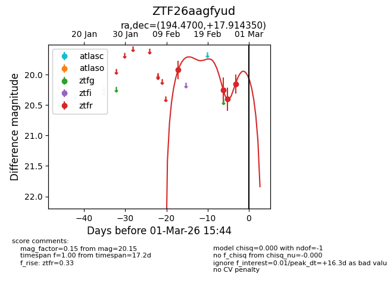
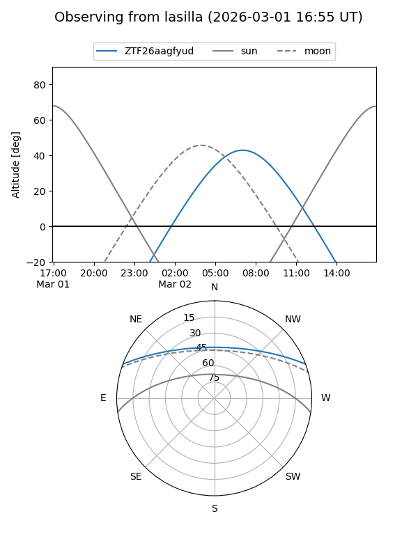
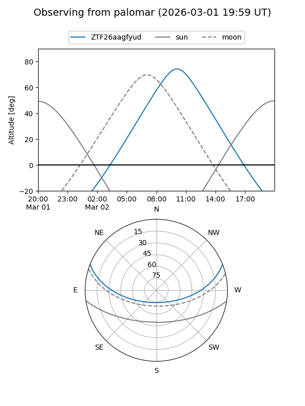
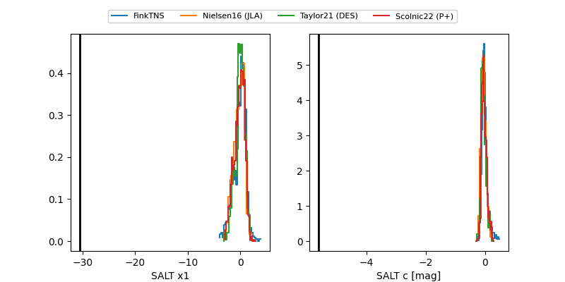

ZTF26aagfyud
Target ZTF26aagfyud at 2026-03-01 15:46
Aliases and brokers:
FINK: link
Lasair: link
ALeRCE: link
alt names
ZTF26aagfyud (ztf,fink_ztf)
Coordinates:
equatorial (ra, dec) = 194.4700,+17.91435
equatorial (HMS+DMS) = 12:57:52.81,+17:54:51.66
galactic (l, b) = (312.4238,+80.66715)
Flags:
Photometry:
last ztfr=20.15
4 ztfr detections
Lightcurve

Visibility


Additional plots
